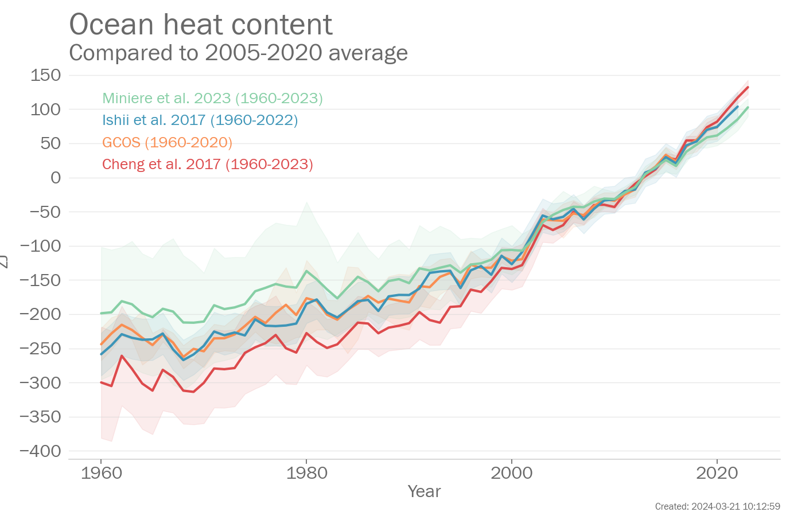
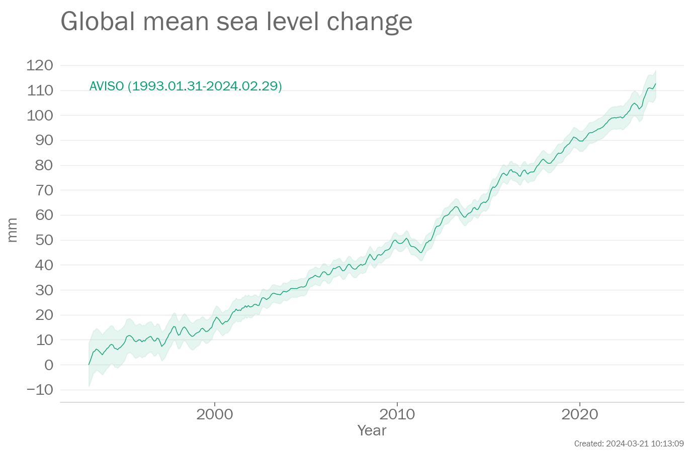

This page is a companion to the WMO State of the Global climate reports. It provides access to the latest versions of selected key global indicators used in the report.
Global climate indicators (for an overview see Trewin et al. 2021) provide a broad view of climate change at the largest scale, encompassing the composition of the atmosphere, energy changes, and the responses of the land, ocean, and ice. These indicators are closely related to one another. For example, the rise in CO2 and other greenhouse gases in the atmosphere leads to an imbalance of energy and thus warming of the atmosphere and ocean. Warming of the ocean in turn leads to rising sea levels, to which is added the melting of ice on land in response to increasing atmospheric temperatures.
The global indicators draw on a wide range of data sets, which are listed at the bottom of the page. Differences between data sets for the same indicator indicate the degree of uncertainty in the indicator. Figures are updated at least annually, with some data sets being updated more frequently.
Under each of the figures, you will find links to the images in multiple file formats (png, pdf and svg), as well as a set of data as shown in the figure in a common comma-separated values (csv) format. The "Read more" link will take you to a wider range of linked indicators.
Regarding the large-scale changes in the climate, Working Group 1 from the sixth assessment report of the Intergovernmental Panel on Climate Change concluded that:
A.1 It is unequivocal that human influence has warmed the atmosphere, ocean and land. Widespread and rapid changes in the atmosphere, ocean, cryosphere and biosphere have occurred.
A.2 The scale of recent changes across the climate system as a whole - and the present state of many aspects of the climate system - are unprecedented over many centuries to many thousands of years.
A.3 Human-induced climate change is already affecting many weather and climate extremes in every region across the globe. Evidence of observed changes in extremes such as heatwaves, heavy precipitation, droughts, and tropical cyclones, and, in particular, their attribution to human influence, has strengthened since AR5.
The year 2023 was ranked between the 2nd and 4th warmest on record. The anomaly for 2023 was 1.25 [1.13 to 1.37]°C relative to the 1850-1900 average 6 data sets were used in this assessment: Berkeley Earth (to Jun 2023), ERA5 (to Jun 2023), GISTEMP (to Jun 2023), HadCRUT5 (to Jun 2023), JRA-55 (to Jun 2023), and NOAAGlobalTemp (to Jun 2023).
The rate of change in the AVISO data set is 3.3 mm/yr between 1993 and 2022.The rate of change in the AVISO CNES data set is 3.4 mm/yr between 1993 and 2023.
Arctic sea ice extent in March 2023 was between 14.44 and 14.49million km2. This was between the 4th and 6th lowest extent on record. September data are not available for 2023.
Carbon dioxide (CO2) is one of the most important greenhouse gases. The concentration of CO2 in the atmosphere is measured at stations around the world which are combined to provide a globally representative value.
The data in the above plot are available in a zip file containing a csv file for each data set.
Data file: Greenhouse_gases_data_files.zip
Checksum: 5b96175cfc0e1dbbd5dfffdd0477c960
Format: BADC CSV format
Original data file (external link)
Citation: WMO Greenhouse Gas Bulletin, No.18, 2022. 26 October 2022 ISSN 2078-0796.
To produce the plot, the following processing steps were performed:
Global mean temperature is based on measurements made at weather stations over land and by ships and buoys over the ocean. Temperatures are typically expressed as anomalies which are temperature differences from the average for a standard period. Here, 1850-1900 is used for the global mean. Instrumental temperature records are some of the longest climate records available, with some series extending back to the 17th century.
The data in the above plot are available in a zip file containing a csv file for each data set.
Data file: Global_temperature_data_files.zip
Checksum: 7b7a8d01a9309b6a78be9e253696aea8
Format: BADC CSV format
Original data file (external link)
To produce the plot, the following processing steps were performed:
Original data file (external link)
To produce the plot, the following processing steps were performed:
Original data file (external link)
Data citation: GISTEMP Team, 2022: GISS Surface Temperature Analysis (GISTEMP), version 4. NASA Goddard Institute for Space Studies. Dataset accessed 2023-08-01 17:04:34 at data.giss.nasa.gov/gistemp/.
To produce the plot, the following processing steps were performed:
Original data file (external link) Original data file (external link)
Acknowledgement: HadCRUT.5.0.1.0 data were obtained from http://www.metoffice.gov.uk/hadobs/hadcrut5 on 2023-08-01 17:04:35 and are © British Crown Copyright, Met Office 2023, provided under an Open Government License, http://www.nationalarchives.gov.uk/doc/open-government-licence/version/3/
To produce the plot, the following processing steps were performed:
Original data file (external link)
To produce the plot, the following processing steps were performed:
Original data file (external link) Original data file (external link)
To produce the plot, the following processing steps were performed:
Ocean heat content is a measure of the change in heat energy stored in the subsurface ocean. It is based on temperature measurements made by research vessels (since the 1950s), moorings, and automated profiling floats (known as Argo floats) since the 2000s.
The data in the above plot are available in a zip file containing a csv file for each data set.
Data file: Ocean_Indicators_data_files.zip
Checksum: 784f1998d99b5ef41faa7637a8159283
Format: BADC CSV format
Original data file (external link) Original data file (external link)
Data citation: von Schuckmann, Karina; Minière, Audrey; Gues, Flora; Cuesta-Valero, Francisco; Kirchengast, Gottfried; Adusumilli, Susheel; Straneo, Fiammetta; Allan, Richard; Barker, Paul M.; Beltrami, Hugo; Boyer, Tim; Cheng, Lijing; Church, John; Desbruyeres, Damien; Dolman, Han; Domingues, Catia; García-García, Almudena; Giglio, Donata; Gilson, John; Gorfer, Maximilian; Haimberger, Leopold; Hendricks, Stefan; Hosoda, Shigeki; Johnson, Gregory; Killick, Rachel; King, Brian; Kolodziejczyk, Nicolas; Korosov, Anton; Krinner, Gerhard; Kuusela, Mikael; Langer, Moritz; Lavergne, Thomas; Li, Yuehua; Lyman, John; Marzeion, Ben; Mayer, Michael; MacDougall, Andrew; Lawrence, Isobel; McDougall, Trevor; Monselesan, Didier; Nitzbon, Jean; Otosaka, Inès; Peng, Jian; Purkey, Sarah; Roemmich, Dean; Sato, Kanako; Sato, Katsunari; Savita, Abhishek; Schweiger, Axel; Shepherd, Andrew; Seneviratne, Sonia; Simons, Leon; Slater, Donald; Slater, Thomas; Smith, Noah; Steiner, Andrea; Suga, Toshio; Szekely, Tanguy; Thiery, Wim; Timmermanns, Mary-Louise; Vanderkelen, Inne; Wijffels, Susan; Wu, Tonghua; Zemp, Michael (2022). Heat stored in the Earth system 1960-2020: Where does the energy go?. World Data Center for Climate (WDCC) at DKRZ. https://www.wdc-climate.de/ui/entry?acronym=GCOS_EHI_1960-2020
To produce the plot, the following processing steps were performed:
Global mean sea level is a measured by satellites using radar altimeters that record the time taken for a radar signal to reach the sea-surface and return to the satellite. Longer records of sea level (not shown here) exist based on tide gauge measurements made along coastlines around the world since the late 19th century.
The data in the above plot are available in a zip file containing a csv file for each data set.
Data file: Sea_level_data_files.zip
Checksum: 84dc1e352bb8f66f85b9575e3e7662ff
Format: BADC CSV format
Original data file (external link)
Acknowledgement: Generated using AVISO+ Products
To produce the plot, the following processing steps were performed:
Original data file (external link)
Acknowledgement: Generated using AVISO+ Products
To produce the plot, the following processing steps were performed:
Sea-ice concentrations are estimated from microwave radiances measured from satellites (from 1979). Sea-ice extent is calculated as the area of ocean grid cells where the sea-ice concentration exceeds 15%. Although there are relatively large differences in the absolute extent between data sets, they agree well on the year-to-year changes and the trends.
The data in the above plot are available in a zip file containing a csv file for each data set.
Data file: Sea_ice_data_files.zip
Checksum: b7c7e6f3e8188e491b9e3fabeec79b90
Format: BADC CSV format
Original data file (external link) Original data file (external link) Original data file (external link) Original data file (external link) Original data file (external link) Original data file (external link) Original data file (external link) Original data file (external link) Original data file (external link) Original data file (external link) Original data file (external link) Original data file (external link)
Data citation: Fetterer, F., K. Knowles, W. N. Meier, M. Savoie, and A. K. Windnagel. 2017, updated daily. Sea Ice Index, Version 3. 1979-present. Boulder, Colorado USA. NSIDC: National Snow and Ice Data Center. doi: https://doi.org/10.7265/N5K072F8. [2023-08-01 17:06:13].
Acknowledgement: Fetterer, F., K. Knowles, W. N. Meier, M. Savoie, and A. K. Windnagel. 2017, updated daily. Sea Ice Index, Version 3. 1979-present. Boulder, Colorado USA. NSIDC: National Snow and Ice Data Center. doi: https://doi.org/10.7265/N5K072F8. [2023-08-01 17:06:13].
To produce the plot, the following processing steps were performed:
Original data file (external link)
Data citation: EUMETSAT Ocean and Sea Ice Satellite Application Facility, Sea ice index 1979-onwards (v2.1, 2020), OSI-420, Data extracted from OSI SAF FTP server: 1979-present, Northern Hemisphere, accessed 2023-08-01 17:06:29
Acknowledgement: The OSI SAF Sea Ice Index v2.1 is made available at https://osisaf-hl.met.no/v2p1-sea-ice-index. The OSI SAF Sea Ice Index v2p1 is prepared using EUMETSAT OSI SAF Sea Ice Concentration data, with R&D input from the ESA Climate Change Initiative (ESA CCI) (Lavergne et al. 2019)
To produce the plot, the following processing steps were performed:
Glaciers are measured using a variety of different techniques. Glacier mass balance data for the global network of reference glaciers are available from the World Glacier Monitoring Service (WGMS), https://www.wgms.ch.
The data in the above plot are available in a zip file containing a csv file for each data set.
Data file: Glaciers_and_ice_sheets_data_files.zip
Checksum: 8e1545583632b6cc9f0c9c78e8d88734
Format: BADC CSV format
Original data file (external link)
Data citation: WGMS (2017, updated, and earlier reports): Global Glacier Change Bulletin No. 2 (2014-2015). Zemp, M., Nussbaumer, S. U., Gärtner-Roer, I., Huber, J., Machguth, H., Paul, F., and Hoelzle, M. (eds.), ICSU(WDS)/IUGG(IACS)/UNEP/UNESCO/WMO, World Glacier Monitoring Service, Zurich, Switzerland, 244 pp., based on database version: doi:10.5904/wgms-fog-2018-11.
To produce the plot, the following processing steps were performed:
Page created on 2023-08-01 using climind v0.1